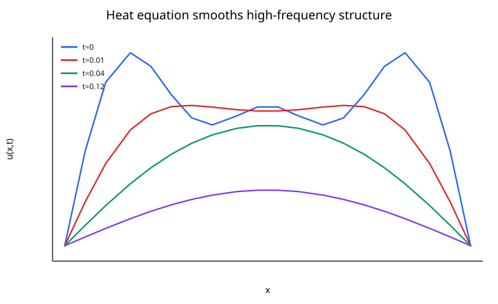
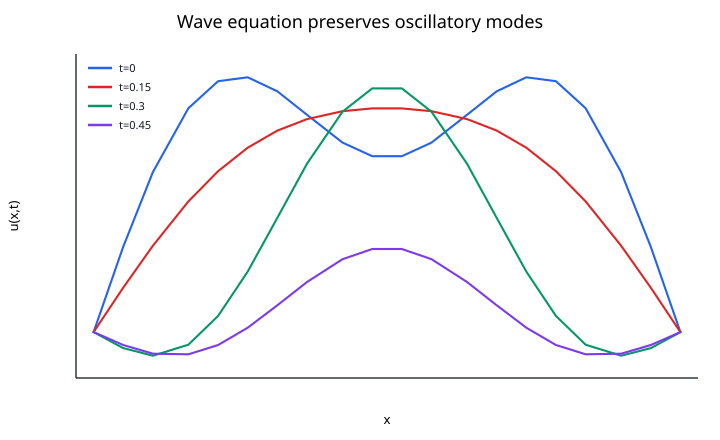

Partial Differential Equations
A partial differential equation (PDE) relates an unknown function of several independent variables to its partial derivatives. PDEs describe fields rather than single trajectories: temperature in space and time, pressure in a fluid, displacement in an elastic body, or the amplitude of a wave.
A general PDE can be written schematically as
$$ F\left(\mathbf{x}, t, u, \nabla u, \nabla^2 u, \ldots \right) = 0. $$
Here $\mathbf{x}$ denotes one or more spatial coordinates and $t$ may represent time.
Why PDEs differ from ODEs
For an ODE, specifying enough initial data often determines a trajectory. A PDE also needs information about the spatial domain and its boundary.
For a domain $\Omega$, typical boundary conditions include:
Dirichlet
$$ u = g \qquad \text{on } \partial\Omega. $$
Neumann
$$ \frac{\partial u}{\partial n} = g \qquad \text{on } \partial\Omega. $$
Robin
$$ \alpha u + \beta \frac{\partial u}{\partial n} = g \qquad \text{on } \partial\Omega. $$
Time-dependent PDEs also require initial data, such as
$$ u(\mathbf{x},0) = u_0(\mathbf{x}). $$
Boundary data and compatibility
The normal derivative is $\partial u/\partial n=\nabla u\cdot\mathbf n$, where $\mathbf n$ is the outward unit normal. The number and location of boundary conditions depend on the equation. Transport generally needs data only on inflow boundaries, whereas a second-order elliptic problem needs an appropriate condition around the boundary.
Boundary and initial data should agree at their intersections if a smooth solution is expected. For the fixed-end heat problem below, this means $u_0(0)=u_0(L)=0$. Incompatible data can introduce an initial layer or reduce the regularity needed by standard error estimates.
A pure Neumann problem also illustrates that boundary data need not determine a unique solution: for $-\nabla^2u=f$ and $\partial u/\partial n=g$ on a connected bounded domain, integration gives the compatibility condition $\int_\Omega f=-\int_{\partial\Omega}g$. If a solution exists, adding a constant gives another one; a normalization such as zero mean is needed for uniqueness.
Three classical types
For a second-order linear PDE in two variables,
$$ A u_{xx} + 2B u_{xy} + C u_{yy} + \text{lower-order terms} = g, $$
the sign of
$$ B^2 - AC $$
provides the classical classification.
This classification concerns the nondegenerate second-order principal part and is pointwise when the coefficients vary. It does not classify every nonlinear or higher-order PDE, and the case $A=B=C=0$ is not a parabolic second-order equation simply because the discriminant vanishes.
Elliptic
If
$$ B^2 - AC<0, $$
the PDE is elliptic.
Prototype:
$$ \nabla^2u = 0. $$
Elliptic problems often describe equilibrium states, such as steady temperature or electrostatic potential.
Parabolic
If
$$ B^2 - AC = 0, $$
the PDE is parabolic.
Prototype:
$$ u_t = \alpha u_{xx}. $$
This is the heat equation. It smooths spatial variation as time passes.

Hyperbolic
If
$$ B^2 - AC>0, $$
the PDE is hyperbolic.
Prototype:
$$ u_{tt} = c^2u_{xx}. $$
This is the wave equation. It propagates disturbances at finite speed.

The heat equation
Consider a rod $0\le x\le L$:
$$ u_t = \alpha u_{xx}. $$
A typical initial-boundary value problem is
$$ u(x,0) = u_0(x), $$
$$ u(0,t) = u(L,t) = 0. $$
The coefficient $\alpha>0$ is the diffusivity.
For the Fourier mode
$$ u_0(x) = \sin\left(\frac{\pi x}{L}\right), $$
the exact solution is
$$ u(x,t) = e^{-\alpha(\pi/L)^2t} \sin\left(\frac{\pi x}{L}\right). $$
Higher-frequency modes decay faster because their second derivatives are larger. This is the mathematical reason diffusion smooths sharp spatial variation.
The wave equation
For a vibrating string,
$$ u_{tt} = c^2u_{xx}, $$
where $c$ is the wave speed.
Two initial conditions are required:
$$ u(x,0) = u_0(x), $$
$$ u_t(x,0) = v_0(x). $$
With fixed ends,
$$ u(0,t) = u(L,t) = 0. $$
The solution can be decomposed into normal modes. Unlike the heat equation, the ideal wave equation does not damp those modes; energy oscillates between kinetic and potential forms.
Laplace and poisson equations
Laplace's equation is
$$ \nabla^2u = 0. $$
Poisson's equation adds a source:
$$ -\nabla^2u = f. $$
These equations occur in electrostatics, steady heat conduction, gravity, and potential flow.
For elliptic equations, boundary values influence the solution throughout the domain. There is no preferred time direction because time is absent from the model.
First-order transport
A simple transport equation is
$$ u_t + c u_x = 0. $$
Its exact solution is
$$ u(x,t) = u_0(x - ct), $$
so the initial profile moves with speed $c$ without changing shape.
This equation highlights the importance of numerical conservation and numerical diffusion: a poor discretization may artificially smear or oscillate around a transported profile.
Method of lines
A common way to solve time-dependent PDEs numerically is to discretize space first.
For the heat equation, use grid points $x_j=j\Delta x$ and the centered difference
$$ u_{xx}(x_j,t) \approx \frac{u_{j-1}-2u_j+u_{j+1}}{\Delta x^2}. $$
Then the PDE becomes a system of ODEs:
$$ \frac{du_j}{dt} = \alpha \frac{u_{j-1}-2u_j+u_{j+1}}{\Delta x^2}. $$
An ODE solver can then integrate this system in time. This is the method of lines.
Stability of a simple heat solver
If forward Euler is used in time together with centered differences in space,
$$ u_j^{n+1} = u_j^n + r \left(u_{j-1}^n - 2u_j^n + u_{j+1}^n \right), $$
where
$$ r = \frac{\alpha\Delta t}{\Delta x^2}. $$
In one spatial dimension, stability requires
$$ r\le \frac{1}{2}. $$
This follows from von Neumann analysis: substituting a Fourier mode $u_j^n=G^n e^{ikj\Delta x}$ gives the amplification factor
$$ G = 1 - 4r\sin^2\left(\frac{k\Delta x}{2}\right), $$
and $|G|\le1$ for all $k$ exactly when $r\le1/2$. This is a typical restriction of explicit schemes: refining the spatial grid may force a much smaller time step, since $\Delta t$ must shrink like $\Delta x^2$.
Backward Euler in time (an implicit scheme) gives $G=1/(1+4r\sin^2(k\Delta x/2))$, so $|G|\le1$ for every $r$ and the time step is limited only by accuracy.
For the wave equation, the standard explicit leapfrog scheme
$$ u_j^{n+1} = 2u_j^n - u_j^{n-1} + \left(\frac{c\Delta t}{\Delta x}\right)^2 \left(u_{j-1}^n - 2u_j^n + u_{j+1}^n \right) $$
is stable when the CFL condition
$$ \frac{c\,\Delta t}{\Delta x}\le 1 $$
holds: the numerical domain of dependence must contain the physical one, so a wave may not travel more than one grid cell per time step.
Spatial accuracy, stiffness, and the first wave step
The centered approximation of $u_{xx}$ has error $O(\Delta x^2)$ for a smooth solution with bounded fourth spatial derivative. Combining it with forward Euler gives global error $O(\Delta t+\Delta x^2)$ under a stable refinement and compatible smooth data. The heat operator's largest eigenvalue magnitudes grow like $1/\Delta x^2$, explaining why spatial refinement creates a progressively stiffer ODE system in the method of lines.
Backward Euler removes the explicit heat stability restriction, but a large $\Delta t$ can still overdamp a physically important mode. Stability establishes bounded propagation, not accurate time resolution.
The wave recurrence needs two time levels. Taylor expansion supplies the first one from the given displacement and velocity:
$$ u_j^1=u_j^0+\Delta t\,v_j^0+\frac{\Delta t^2}{2}u_{tt}(x_j,0)+O(\Delta t^3). $$
Substituting $u_{tt}=c^2u_{xx}$ and the centered spatial difference gives the initialization below. Boundary values must be imposed at every time level. An accurate recurrence with an inconsistent first step can still lose its expected second-order convergence.
Time grid and the final step
The solvers cover $[0,T]$ and always return $t_{\text{last}}=T$ exactly, even when $T/\Delta t$ is not an integer.
- Heat equation (explicit and implicit). Steps have length $\Delta t$ except the last one, which is shortened to land on $T$. The explicit stability condition $r\le 1/2$ is checked for the nominal $\Delta t$ only; a shorter final step has a smaller $r$ and is therefore stable too.
- Wave equation (leapfrog). Leapfrog needs a uniform step, so the solver uses $n=\lceil T/\Delta t\rceil$ steps of size $\Delta t_{\text{eff}}=T/n\le\Delta t$. The CFL condition checked for the nominal $\Delta t$ then holds for $\Delta t_{\text{eff}}$ as well. With $\nu=c\Delta t_{\text{eff}}/\Delta x$, the first step is taken from the initial velocity as $u^1_j=u^0_j+\Delta t_{\text{eff}}v_j+\tfrac12\nu^2(u^0_{j+1}-2u^0_j+u^0_{j-1})$. Here $\nu$ is the wave Courant number, distinct from the heat ratio $r$. With smooth compatible data and a stable grid, the scheme is second order in time and space.
Main numerical approaches
Finite differences
Replace derivatives with differences on a grid. Finite differences are simple and effective on regular geometries.
Finite volumes
Integrate conservation laws over small control volumes and update fluxes across their boundaries. This is particularly natural for fluid dynamics and conservation laws.
Finite elements
Approximate the solution by basis functions on a mesh and enforce a weak form of the PDE. Finite elements handle irregular geometries and variable material properties well.
Spectral methods
Approximate the solution using global basis functions such as Fourier or Chebyshev modes. For smooth problems, spectral methods can converge extremely rapidly.
Nonlinear PDEs
Many important PDEs are nonlinear. Examples include:
Burgers' equation
$$ u_t + u u_x = \nu u_{xx}. $$
Reaction-diffusion
$$ u_t = D\nabla^2u + R(u). $$
Incompressible Navier--Stokes
$$ \frac{\partial\mathbf{v}}{\partial t} + (\mathbf{v}\cdot\nabla)\mathbf{v} = -\frac{1}{\rho}\nabla p + \nu\nabla^2\mathbf{v} + \mathbf{f}, $$
$$ \nabla\cdot\mathbf{v} = 0. $$
Nonlinearity can introduce shocks, bifurcations, turbulence, and pattern formation.
Model-based checks on a computed solution
For a smooth heat solution with zero endpoint values, multiply the PDE by $u$ and integrate by parts:
$$ \frac{d}{dt}\left(\frac12\int_0^L u^2\,dx\right) =-\alpha\int_0^L u_x^2\,dx\leq0. $$
The boundary term vanishes because $u=0$ at both ends. Thus this squared-amplitude measure should decay; a growing numerical trajectory can indicate an unstable discretization or incorrectly imposed boundary data. Total heat itself need not be conserved under these boundaries, since heat can leave the rod.
For the smooth, fixed-end wave problem, the energy
$$ E(t)=\frac12\int_0^L\left(u_t^2+c^2u_x^2\right)\,dx $$
instead satisfies $dE/dt=0$. Multiplying the wave equation by $u_t$ and integrating by parts shows the cancellation. A numerical scheme may conserve a related discrete energy or introduce drift, so compare the diagnostic with the scheme's expected behavior and check how it changes under refinement. The boundary conditions determine which conservation or dissipation statement is appropriate.
A practical PDE workflow
- identify the PDE type and physical domain,
- state initial and boundary conditions clearly,
- choose a spatial discretization suited to the geometry and conservation properties,
- choose a stable time integrator if the problem evolves in time,
- refine the mesh and time step to check convergence,
- monitor conserved or dissipated quantities when the model supplies them,
- distinguish numerical artifacts from genuine model behavior.